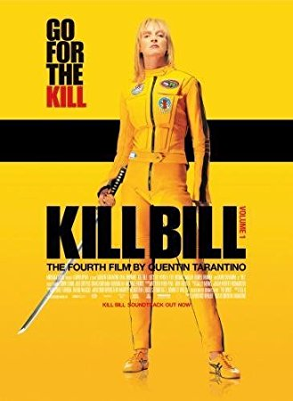
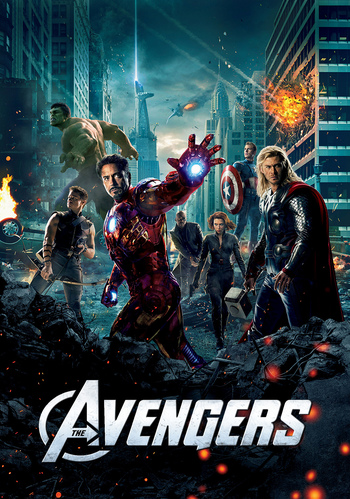
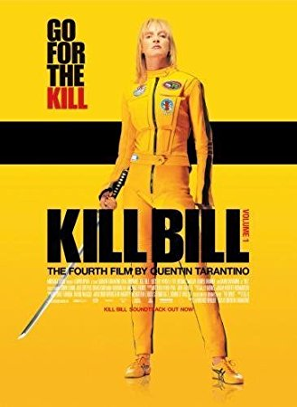
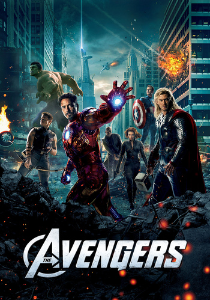
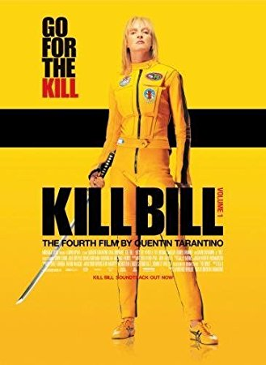
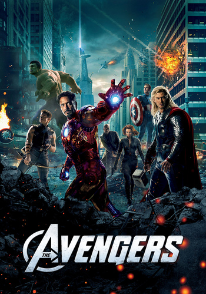

Analyzing common compositions of film posters will be the next step we will be taking in studying film poster design. Although every film poster looks unique, different and communicated different content… they actually mostly follow the same few composition schemes. They almost all present their protagonist(s) while positioning them in accordance with the film’s theme. Photoble enumerates the main shots most commonly seen on posters. The Close-Up: A common composition seen in film poster design is the single character close-up. “The closer to face you are the more personal attitude will be.” The two-person close-up is also common and is mostly seen in film posters for romantic movies or movies with an emphasis on a duo, portraying the relationship that the movie revolves around. Less common are close ups of groups larger than two, for spacing issues with a poster’s standard size. The poster of the film Aviator is a strong example of a close-up. The long shot: Long shots of single or multiple characters give the opportunity to give the poster more personality and reveal more of the film by positioning the characters’ bodies expressively… The poster of Kill Bill shows a powerful character long shot. The background: The background of a film poster is unexpectedly a very important portion of its composition. Photographs of people mainly reveal characters and character personalities; the background gives them context, reveals strategic hints about the plot. The film poster for The Avengers includes a very revealing background. Text: As states in a previous post, the text in a film poster has great importance. The poster generally includes a film title and the names of the most important to the production of the film. These components are altogether the most important to the design of an effective film poster. AdWeek provides further details on the specifics that make each of these components successful individually.

